전자계산기제어산업기사(구) (2008-09-07 기출문제)
1과목: 프로그래밍일반
1. C 언어에서 사용되는 자료형이 아닌 것은?
- double
- short
- integer
- float
(정답률: 알수없음)

2. 작성된 표현식이 주어진 BNF에 의해 바르게 작성되었는지를 확인하기 위해 만들어진 트리는 무엇인가?
- root tree
- binary normal tree
- parse tree
- level tree
(정답률: 알수없음)
3. 운영체제의 목적으로 옳지 않은 것은?
- 처리 능력 향상
- 신뢰도 향상
- 응답 시간 증가
- 사용 가능도 향상
(정답률: 알수없음)
4. 원시 프로그램을 컴파일러가 수행되는 기계에 대한 기계어로 번역하는 것이 아니라, 다른 기종에 대한 기계어로 번역하는 것은?
- linker
- debugger
- cross-compiler
- preprocessor
(정답률: 알수없음)
5. BNF 심볼 중 택일을 의미하는 것은?
- ::=
- ＜＞
- |
- #
(정답률: 알수없음)
6. 로더(Loader)의 기능으로 볼 수 없는 것은?
- 할당(allocation)
- 연결(link)
- 번역(translation)
- 재배치(relocation)
(정답률: 알수없음)
7. 운영체제가 제공하는 서비스로 볼 수 없는 것은?
- 프로그래머가 작성한 응용 프로그램에 대한 오류를 자동으로 수정한다.
- 파일의 생성, 판독, 삭제 등의 파일에 대한 조작을 지원한다.
- 각종 자원에 대한 사용 내역이나 응답시간과 같은 성능향상을 위한 요소들을 기록하여 관리한다.
- 컴퓨터 시스템의 하드웨어 오류를 발견하고 그에 대한 적절한 조치를 한다.
(정답률: 알수없음)
8. C 언어의 기억 클래스에 해당하지 않는 것은?
- 내부 변수(internal variable)
- 자동 변수(automatic variable)
- 레지스터 변수(register variable)
- 정적 변수(static variable)
(정답률: 알수없음)
9. 기계어에 대한 설명으로 옳지 않은 것은?
- 2진수 0과 1을 사용하여 명령어와 데이터를 나타낸다.
- 컴퓨터가 직접 이해할 수 있는 언어이다.
- 전문적인 지식이 없으면 이해하기 힘들다.
- 기계마다 언어가 동일하여 호환성이 높다.
(정답률: 알수없음)
10. C 언어의 FOR 문, COBOL 언어의 PERFORM 문에 해당하는 것은?
- 반복문
- 종료문
- 입·출력문
- 선언문
(정답률: 알수없음)
11. 이항 연산자가 아닌 것은?
- AND
- EX-OR
- SHIFT
- OR
(정답률: 알수없음)
12. 프로그램 수행 순서로 옳은 것은?
- 원시프로그램 → 링커 → 로더 → 목적프로그램 → 컴파일러
- 원시프로그램 → 목적프로그램 → 컴파일러 → 링커 → 로더
- 원시프로그램 → 컴파일러 → 링커 → 로더 → 목적프로그램
- 원시프로그램 → 컴파일러 → 목적프로그램 → 링커 → 로더
(정답률: 알수없음)
13. 어휘 분석 단계에서 주로 행해시즌 작업은 무엇인가?
- 토큰 생성
- 기억 장소 할당
- 구문 분석
- 파싱
(정답률: 알수없음)
14. 시스템 프로그래밍 언어로 사용하기에 가장 적당한 것은?
- COBOL
- C
- BASIC
- FORTRAN
(정답률: 알수없음)
15. 언어의 구문 요소 중 프로그램의 판독성을 향상시키며, 프로그램 문서화의 중요한 부분을 담당하는 것은?
- 식별자
- 주석
- 상수
- 예약어
(정답률: 알수없음)
16. C 언어에서 사용되는 이스케이프 시퀀스(Escape-Sequence)와 그 의미의 연결이 옳지 않은 것은?
- \n : new line
- \b : null character
- \t : tab
- \r : carriage return
(정답률: 알수없음)
17. 프로그램 개발 과정에서 프로그램 안에 내재해 있는 논리적 오류를 발견하고 수정하는 작업을 무엇이라고 하는가?
- 로딩
- 코딩
- 디버깅
- 링킹
(정답률: 알수없음)
18. C 언어에서 문자열 입력시 사용하는 함수는?
- gets ( )
- getchar ( )
- puts ( )
- putchar ( )
(정답률: 알수없음)
19. 어셈블리어를 기계어로 번역하는 것은?
- 링커
- 로더
- 어셈블러
- 운영체제
(정답률: 알수없음)
20. 두 개의 피연산자를 취하는 이항(Binary) 연산자 표현에 적합하며, 연산 기호가 두 피연산자 사이에 놓여지는 표기법은?
- 전위
- 후위
- 복합
- 중위
(정답률: 알수없음)
2과목: 전자계산기구조
21. 어떤 메모리가 8K × 8 크기를 가질 때 데이터의 입·출력선과 어드레스 선은 몇 개인가?
- 입·출력선 : 8, 어드레스 선 : 13
- 입·출력선 : 8, 어드레스 선 : 8
- 입·출력선 : 4, 어드레스 선 : 8
- 입·출력선 : 4, 어드레스 선 : 13
(정답률: 알수없음)
22. 다음 중 RISC의 특징이 아닌 것은?
- 명령어의 개수와 주소지정방식이 최소화되어 있다.
- 워드에서의 바이트수를 세는 특별한 디코딩 회로가 필요하다.
- 명령어의 길이가 고정적이다.
- 중첩 레지스터 윈도우를 사용한다.
(정답률: 알수없음)
23. 다음이 설명하고 있는 것은?
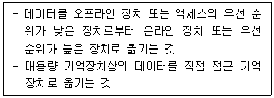
- saving
- spooling
- storing
- staging
(정답률: 알수없음)
24. 함수연산기능 인스트럭션의 수행에 필요한 피연산자를 기억시킬 레지스터의 종류에 따른 컴퓨터 구조 분류에 속하지 않은 것은?
- 스택 컴퓨터구조
- 큐 컴퓨터구조
- AC 컴퓨터구조
- 범용 레지스터 컴퓨터구조
(정답률: 알수없음)
25. 다음과 같은 진리표를 갖는 게이트는?
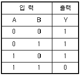
- NOR 게이트
- NAND 게이트
- EX-OR 게이트
- OR 게이트
(정답률: 알수없음)
26. 다음 그림과 같이 EBCDIC 코드에서는 처음 4비트를 Zone이라 부르는데 처음 2비트가 01로 시작할 때 무엇을 나타내는가?
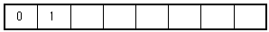
- 여분
- 특수문자
- 소문자
- 대문자
(정답률: 알수없음)
27. 인스트럭션의 수행 시간에 관한 설명으로 옳지 않은 것은?
- memory read/write cycle이 인스트럭션 수행 시간에 지배적 영향을 준다.
- 인스트럭션 종류에 따라 수행시간이 다르다.
- OP-code만으로 인스트럭션 수행시간을 모두 알 수 있다.
- 인스트럭션 수행 시간은 여러 개의 machine cycle로 구성된다.
(정답률: 알수없음)
28. 컴퓨터에서 MAR(Memory Address Register)의 역할은?
- 수행되어야 할 프로그램의 주소를 가리킨다.
- 메모리에 보관된 내용을 누산기(accumulator)에 전달하는 역할을 한다.
- 고급 수준 언어를 기계어로 변환해 주는 일종의 소프트웨어이다.
- CPU에서 기억장치내의 특정번지에 있는 데이터나 명령어를 인출하기 위해 그 번지를 기억하는 역할을 한다.
(정답률: 알수없음)
29. 인에이블 또는 디스에이블 단자에 의하여 데이터의 전송방향을 하드웨어적으로 제어하는데 사용되는 소자는?
- multiplexer
- tri-state buffer
- decoder
- SRAM
(정답률: 알수없음)
30. 비수치 데이터를 합치는데 이용되는 연산은?
- AND
- OR
- SHIFT
- ROTATE
(정답률: 알수없음)
31. 플립플롭(Flip Flop)구조를 단위 소자의 구조로 하여 이루어진 기억 장치용 IC는?
- DRAM
- SRAM
- PRAM
- RLA
(정답률: 알수없음)
32. 다음 중 입력 X, Y, Z에 대한 전가산기(Full Adder)의 캐리(Carry) 비트를 논리식으로 바르게 표현한 것은?
- C = XY + XZ
- C = XYZ
- C = X⊕Y⊕Z
- C = XY + (X⊕Y)Z
(정답률: 알수없음)
33. 인터럽트의 발생 원인이 아닌 것은?
- 오퍼레이터 조작
- 정전
- 불법적인 인스트럭션의 수행
- 부프로그램의 호출
(정답률: 알수없음)
34. 입·출력장치와 주기억장치를 연결하는 중개 역할을 담당하는 부분은?
- 버스(Bus)
- 버퍼(Buffer)
- 채널(Channel)
- 콘솔(Console)
(정답률: 알수없음)
35. 다음 중 상대 주소의 특징으로 가장 옳은 것은?
- 이해하기 쉽다.
- 주소부가 길어진다.
- 메모리 이용 효율이 높다.
- 이 주수로 직접 데이터에 접근할 수 있다.
(정답률: 알수없음)
36. 중앙연산처리 장치에서 마이크로 동작(Micro-operation)이 순서적으로 일어나게 하는데 필요한 신호는?
- 실행 신호
- 순차 신호
- 제어 신호
- 타이밍 신호
(정답률: 알수없음)
37. 입·출력 장치와 기억장치와의 차이점으로 옳지 않은 것은?
- 기억장치의 동작 속도가 빠르다.
- 입·출력 장치는 자율적으로 동작한다.
- 기억장치의 정보 단위는 [Word] 이다.
- 입·출력 장치가 착오 발생률이 적다.
(정답률: 알수없음)
38. 다음에서 설명하는 방법은 무엇인가?
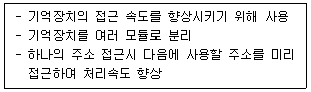
- 메모리 인터리빙
- 세그먼트
- 페이징
- 매핑
(정답률: 알수없음)
39. 다음 중 부동소수점 수의 국제 표준으로 제정된 표준안은?
- IEEE 754
- IEEE 755
- IEEE 756
- IEEE 757
(정답률: 알수없음)
40. 메모리의 내용을 해독하기 위해 메모리로부터 인출한 op-code를 저장하는 레지스터는?
- Flag Register
- Index Register
- Instruction Register
- Address Register
(정답률: 알수없음)
3과목: 마이크로전자계산기
41. 다음 중 자료전달 인스트럭션은 어느 것인가?
- 스택 인스트럭션
- 비교 인스트럭션
- 시프트 인스트럭션
- 서브루틴 인스트럭션
(정답률: 알수없음)
42. 다음 중 보조기억장치가 아닌 것은?
- magnetic disk
- CCD
- magnetic drum
- ROM
(정답률: 알수없음)
43. 마이크로 컴퓨터 프로그램을 개발하기 위해 개발 툴(시스템)을 무엇이라 하는가?
- Linker
- JDK
- MDS
- MSDK
(정답률: 알수없음)
44. 마이크로프로세서의 제어버스 신호 중
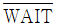
신호에 관한 설명 중 틀린 것은?- CPU는 대기 상태로 된다.
- 메모리가 데이터를 입력할 준비가 되어 있지 않음을 CPU에게 알려준다.
- CPU가 동작을 멈추고 정지한다.
- 고속 CPU와 저속의 장치를 접속하여 사용하고자 할 때 사용할 수 있다.
(정답률: 알수없음)
45. CPU와 주기억장치의 속도 차가 클 때 컴퓨터의 성능을 높이기 위하여 명령의 처리 속도를 CPU의 속도와 같도록 구성하는 고속 메모리는?
- Virtual Memory
- Cache Memory
- Auxiliary Memory
- Segement Memory
(정답률: 알수없음)
46. 다음 중 입·출력 채널의 종류가 아닌 것은?
- selector channel
- byte multiplexer channel
- block multiplexer channel
- switch multiplexer channel
(정답률: 알수없음)
47. 다음 동기식 비트 직렬 전송의 동작 순서로 옳은 것은?
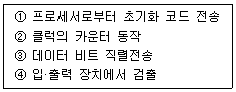
- ① - ② - ③ - ④
- ① - ③ - ④ - ②
- ① - ④ - ② - ③
- ① - ④ - ③ - ②
(정답률: 알수없음)
48. 특별한 조건이나 신호가 컴퓨터에 의해 인터럽트 되는 것을 방지하는 것을 무엇이라고 하는가?
- 벡터 인터럽트
- Polling 방식
- 인터럽트 마스크
- Daisy-Chain
(정답률: 알수없음)
49. 1대의 처리장치로 복수의 프로그램을 병행하여 실행하는 프로그램은?
- 멀티플렉싱
- 시스템 프로그래밍
- 멀티프로그래밍
- 재배치 프로그램
(정답률: 알수없음)
50. 명령어 사이클 중 가장 먼저 수행되는 단계는?
- 명령어 해독
- 명령어 인출
- 명령어 수행
- 결과 저장
(정답률: 알수없음)
51. 다음 중 3-state 회로와 관계 없는 것은?
- HIGH(1)
- LOW(0)
- turned off
- common
(정답률: 알수없음)
52. 명렁어 자체가 특정한 레지스터를 스스로 지정하는 방식은?
- register addressing mode
- implied addressing mode
- immediate addressing mode
- indirect addressing mode
(정답률: 알수없음)
53. 다음 subroutine에 대한 내용 중 옳은 것은?
- subroutine의 마지막 명령어는 반드시 return 일 필요는 없다.
- 마이크로컴퓨터는 subroutine에서 return 할 주소를 stack에 저장한다.
- NESTED subroutine은 자기 자신을 call 할 수 있는 subroutine 이다.
- recursive subroutine 이란 다른 subroutine에 의해 다시 call 되는 subroutine 이다.
(정답률: 알수없음)
54. CALL instruction을 수행하기 전의 stack pointer의 내용이 4000H 였다면 CALL instruction을 수행한 후의 stack pointer의 내용은 어떻게 되겠는가? (단, 8 bit CPU인 경우)
- 3FFDH
- 3FFEH
- 4000H
- 4008H
(정답률: 알수없음)
55. 다음 입·출력 방식 중 가장 비효율적인 방식은?
- 프로그램에 의한 입·출력
- 인터럽트에 의한 입·출력
- DMA
- Channel
(정답률: 알수없음)
56. 어떤 컴퓨터의 메모리 용량이 4096 워드(word)이다. MAR(memory address register)는 몇 bit로 구성하면 좋은가? (단, 8 bit/word 이다.)
- 10
- 12
- 14
- 16
(정답률: 알수없음)
57. 다이나믹 램(dynamic RAM)의 설명으로 옳은 것은?
- 동작 속도가 스태틱 램(static RAM)보다 느리다.
- 1bit당 소비전력이 스태틱 램(static RAM)보다 크다.
- 소용량의 메모리에 적합하다.
- 리플래시 펄스(refresh pulse) 공급이 필요하다.
(정답률: 알수없음)
58. n개의 입력에 대해 2n개 이하의 출력을 만들며 컴퓨터에서 제어 신호를 만들어 내는 논리 회로 소자는?
- RAM
- PROM
- PLA
- EPROM
(정답률: 알수없음)
59. ALU의 연산 결과가 “0”일 때 세트(set)되는 상태 비트는?
- 부호(Sign) 플래그
- 오버플로우(Overflow) 플래그
- 제로(Zero) 플래그
- 캐리(Carry) 플래그
(정답률: 알수없음)
60. 다음 중 소프트웨어 평가 요소로서 적당하지 않은 것은?
- 검사의 용이성
- 신뢰도
- 응용성
- 중복성
(정답률: 알수없음)
4과목: 논리회로
61. 동기식 카운터와 비동기식 카운터를 비교 설명한 것 중 맞는 것은?
- 동기식 카운터는 각 플립플롭의 clock에 동기되는 카운터이다.
- 동기식 카운터는 비동기식 카운터에 비해서 안정되지 못하는 단점이 있다.
- 동기식과 비동기식 카운터는 플립플롭에 공통으로 클럭(clock)이 공급된다.
- 동기식 up-counter는 기억소자로 응용될 수 있다.
(정답률: 알수없음)
62. 다음 진리표를 보고 논리식으로 바르게 구한 식은?
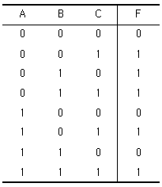
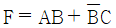
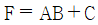
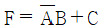
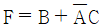
(정답률: 알수없음)
63. 메모리에 새로운 워드를 저장시키려 한다. 올바른 순서는?
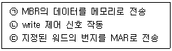
- ㉠ - ㉡ - ㉢
- ㉢ - ㉡ - ㉠
- ㉠ - ㉢ - ㉡
- ㉢ - ㉠ - ㉡
(정답률: 알수없음)
64. 다음 논리회로의 기능을 나타낸 이름 중 옳은 것은?
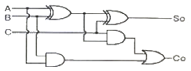
- 인코더(encoder)
- 디코더(decoder)
- 반가산기(half-adder)
- 전가산기(full-adder)
(정답률: 알수없음)
65. Toggling 상태를 이용한 플립플롭 형태는?
- RS 플립플롭
- D 플립플롭
- JK 플립플롭
- T 플립플롭
(정답률: 알수없음)
66. 다음 그림의 파형이 Positive 에지 트리거 D플립플롭의 입력으로 들어간다. 플립플롭에서 클럭펄스(CLK) 후 출력(Q)의 값은?
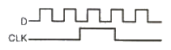
- 불변
- 반전
- 1
- 0
(정답률: 알수없음)
67. 마스터슬레이브 JK 플립플롭을 사용하는 이유는?
- 지연시간을 짧게 하기 위해
- 지연시간을 길게 하기 위해
- 클럭펄스를 사용할 수 없을 때
- 레이싱(racing) 현상을 없애기 위해
(정답률: 알수없음)
68. (4)10을 그레이 코드(Gray code)로 변환하면?
- 0100(G)
- 1100(G)
- 0110(G)
- 0010(G)
(정답률: 알수없음)
69. 다음 코드(code) 변환 회로의 명칭은?
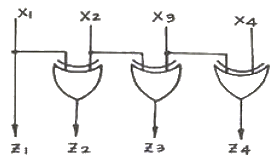
- BCD-9 보수 변환기
- BCD-3초과 코드 변환기
- BCD-2421 코드 변환기
- BCD-GRAY 코드 변환기
(정답률: 알수없음)
70. 송신기가 ASCII 코드 1100101을 홀수 패리티를 사용하여 전송한다면 11001011을 보내게 된다. 이 때, 수신측에서 논리적인 검사방식에 주로 사용되는 논리회로는?
- AND
- NOT
- OR
- EX-OR
(정답률: 알수없음)
71. 자기 보수성을 갖고 있는 코드 방식이 아닌 것은?
- 3-초과코드 방식
- BCD코드 방식
- 8421코드 방식
- 2421코드 방식
(정답률: 알수없음)
72. 다음 그림의 캐스케이드 계수기의 구성에서 총 모듈을 구하면?
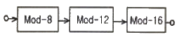
- 36
- 72
- 144
- 1536
(정답률: 알수없음)
73. 논리 게이트의 특성을 결정하는 각 요인들에 대한 설명으로 옳지 않은 것은?
- 논리 게이트의 입력 파형과 출력 파형 사이에 발생하는 시간 지연을 지연 시간이라 한다.
- 논리 게이트의 입·출력 특성 곡선에서 입력 전압에 대한 출력 전압의 High level과 Low level 사이의 전압차를 논리 스윙이라 한다.
- 논리 회로가 취급할 수 있는 입력 단자의 수를 팬 인(fan-in)이라 한다.
- 논리 회로가 취급할 수 있는 입력 단자의 수를 팬 아웃(fan-out)이라 한다.
(정답률: 알수없음)
74. 2진 데이터를 펀치한 카드 덱크가 있다고 한다. 각 카드에는 24개의 36비트 어(WORD)가 들어 있다. 만약 카드가 분당 600장의 속도로 읽힌다면 데이터가 계산기에 들어가는 속도는 초당 몇 비트인가?
- 518400
- 17280
- 8640
- 4320
(정답률: 알수없음)
75. 다음 논리식을 카르노 앱으로 올바르게 나타낸 것은?
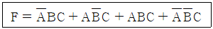
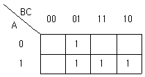
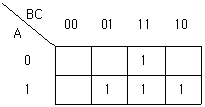
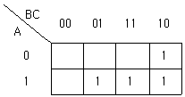
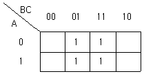
(정답률: 알수없음)
76. 2진수 1011.11을 10진수로 표시하면?
- 101.6
- 15.75
- 11.75
- 10.6
(정답률: 알수없음)
77. 그림과 같은 회로도의 출력 F는?
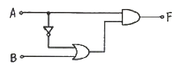
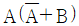
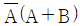
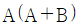
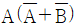
(정답률: 알수없음)
78. 다음 중 10개의 플립플롭을 사용하여 만들 수 있는 카운터의 모듈러스 값과 최대 카운터 값으로 올바른 것은?
- 10, 9
- 100, 99
- 1024, 1023
- 100, 999
(정답률: 알수없음)
79. 4단 하향 Counter에서 10번째 클럭펄스가 인가되면 각단이 나타내는 2진수를 10진수로 변환하면?
- 6
- 7
- 8
- 9
(정답률: 알수없음)
80. 다음 논리회로의 이름은?
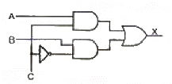
- 디코더
- 인코더
- 디멀티플렉서
- 멀티플렉서
(정답률: 알수없음)
5과목: 정보통신개론
81. 디지털 변조 방식 중에서 전송속도를 높이기 위하여 위상과 진폭을 함께 변화시켜서 변조하는 방식은?
- ASK
- PSK
- FSK
- QAM
(정답률: 알수없음)
82. ITU-T에서 권고한 B-ISDN ATM의 프로토콜 구조가 아닌 것은?
- 사용자 평면
- 제어 평면
- 통합 평면
- 관리 평면
(정답률: 알수없음)
83. 다음 중 3 ~ 20[MHz]의 주파수 범위에 해당하는 명칭은?
- LF
- MF
- HF
- VHF
(정답률: 알수없음)
84. 다음 중 DSU(Digital Service Unit)의 기능은?
- 아날로그 신호를 디지털 데이터로 변환시킨다.
- 디지털 데이터를 아날로그 신호로 변환시킨다.
- 아날로그 신호를 아날로그 데이터로 변환시킨다.
- 디지털 데이터를 디지털 신호로 변환시킨다.
(정답률: 알수없음)
85. 다음 중 패킷교환망의 특징이 아닌 것은?
- 회선이용 효율의 극대화
- 전송품질이 우수하여 고신뢰성
- 정보를 패킷단위로 전송
- 컴퓨터와 단말 사이에 직접적인 통신회선 설정
(정답률: 알수없음)
86. 전화와 텔레비전의 연결에 의한 정보서비스의 형태는?
- 비디오텍스(videotex)
- 텔레텍스트(tleltext)
- 팩시밀리(fax)
- 텔렉스(telex)
(정답률: 알수없음)
87. 다음 중 LAN의 한 종류인 “10Base 5” 네트워크에서 사용되는 표준 전송매체는?
- Coaxial cable
- Optical cable
- UTP(unshielded twisted pair)
- Microwave
(정답률: 알수없음)
88. 가상회선방식의 패킷교환망에서 프토토콜이 수행하는 기능이 아닌 것은?
- 순서제어
- 흐름제어
- 오류제어
- 시간제어
(정답률: 알수없음)
89. OSI 7계층 참조모델 중 데이터링크 계층의 주요기능에 해당되지 않는 것은?
- 데이터링크의 설정과 해지
- 경로설정 및 다중화
- 에러제어
- 흐름제어
(정답률: 알수없음)
90. 전송할 데이터의 앞 부분과 뒷 부분에 헤더(header)와 트레일러(trailer)를 첨가시키는 과정은?
- 정보의 분할
- 정보의 캡슐화
- 동기화
- 순서지정
(정답률: 알수없음)
91. 다음 중 주파수분할 다중화 방식에서 인접하는 서브채널(sub-channel)들 사이에 두는 것은?
- 터미널(terminal)
- 대역폭(frequency band)
- 보호대역(guard bnad)
- 타임슬롯(time slot)
(정답률: 알수없음)
92. 다음 중 ATM셀의 헤더를 구성하는 필드에서 경로배정용에 사용되는 것은?
- GFC(Generic flow control)
- VPI(Virtual path identifier)
- PT(Payload type)
- CLP(Cell loss priority)
(정답률: 알수없음)
93. 샤논(Shannon)의 정리에서 통신 채널용량에 관한 설명으로 적합하지 않은 것은?
- 대역폭(W)에 비례한다.
- 신호대잡음비(S/N)가 클수록 증가한다.
- 신호전력(S)이 클수록 증가한다.
- 잡음전력(N)과는 무관하다.
(정답률: 알수없음)
94. 분리된 두 장치간에 교대로 데이터를 교환하는 통신방식을 무엇이라 하는가?
- 단향 통신방식
- 반이중 통신방식
- 전이중 통신방식
- 포인트 투 포인트방식
(정답률: 알수없음)
95. 다음 중 CATV의 주요 구성 요소와 가장 거리가 먼 것은?
- 헤드앤드(HEAD-END)
- 송신 안테나
- 전송로
- 가입자 단말장치
(정답률: 알수없음)
96. 다음 중 아날로그 변조방식이 아닌 것은?
- 진폭변조
- 주파수변조
- 위상변조
- 채널변조
(정답률: 알수없음)
97. 다음 중 미국의 군사용 방공시스템으로 사용된 최초의 데이터 통신시스템은?
- ARPA
- CTSS
- SABRE
- SAGE
(정답률: 알수없음)
98. 다음 통신망 구성 형태 중 각 노드가 계층적으로 구성되어 있는 것은?
- 트리(Tree)형
- 링(Ring)형
- 스타(Star)형
- 버스(Bus)형
(정답률: 알수없음)
99. 다음 중 외부의 전자기적인 영향을 받지 않는 매체는?
- 동축 케이블
- 트위스트페어 케이블
- 광섬유 케이블
- UTP 케이블
(정답률: 알수없음)
100. 다음 중 ITU-T의 권고안 X 시리즈는 어떤 내용인가?
- 전화망을 이용한 데이터전송에 관한 사항
- 축적프로그램 제어식 교환의 프로그램에 관한 사항
- 공중테이터통신망을 이용한 데이터전송에 관한 사항
- 전신의 전송 및 교환에 관한 사항
(정답률: 알수없음)